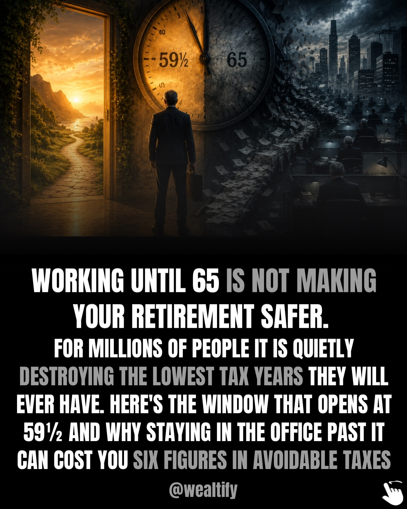
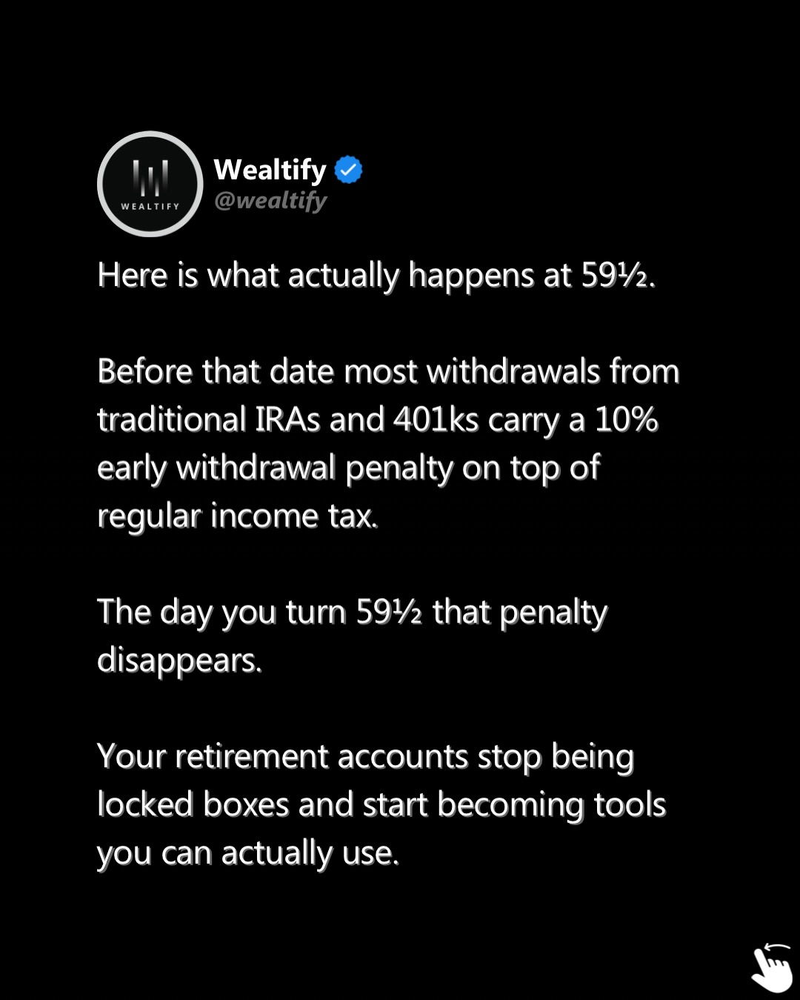
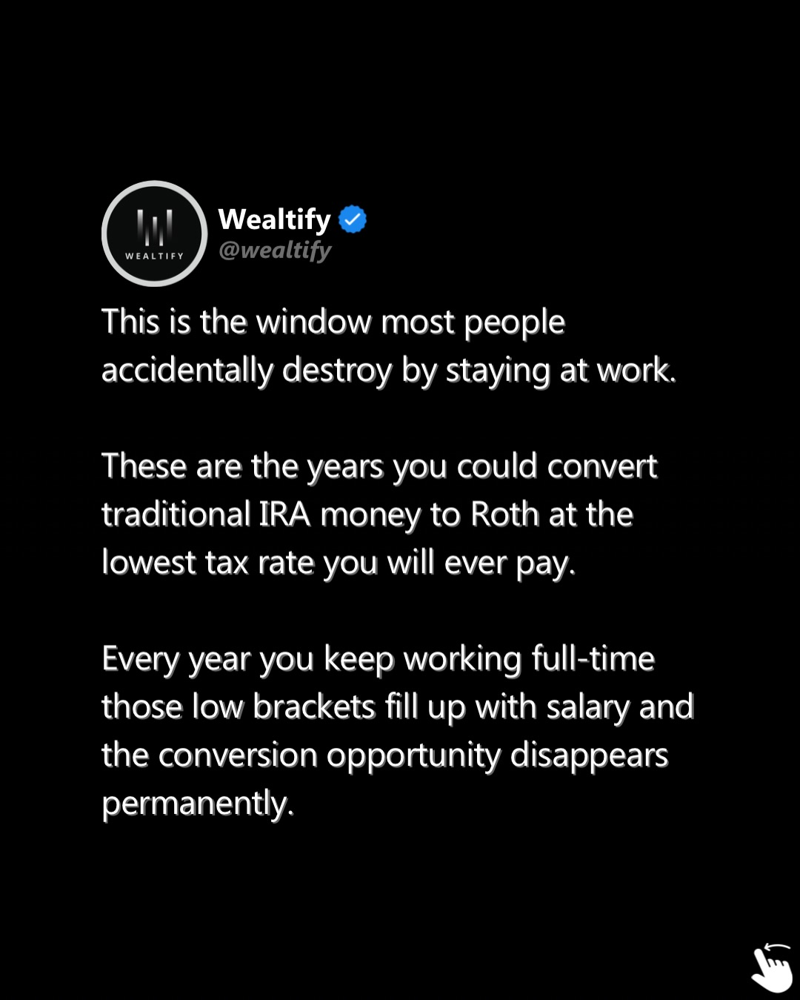
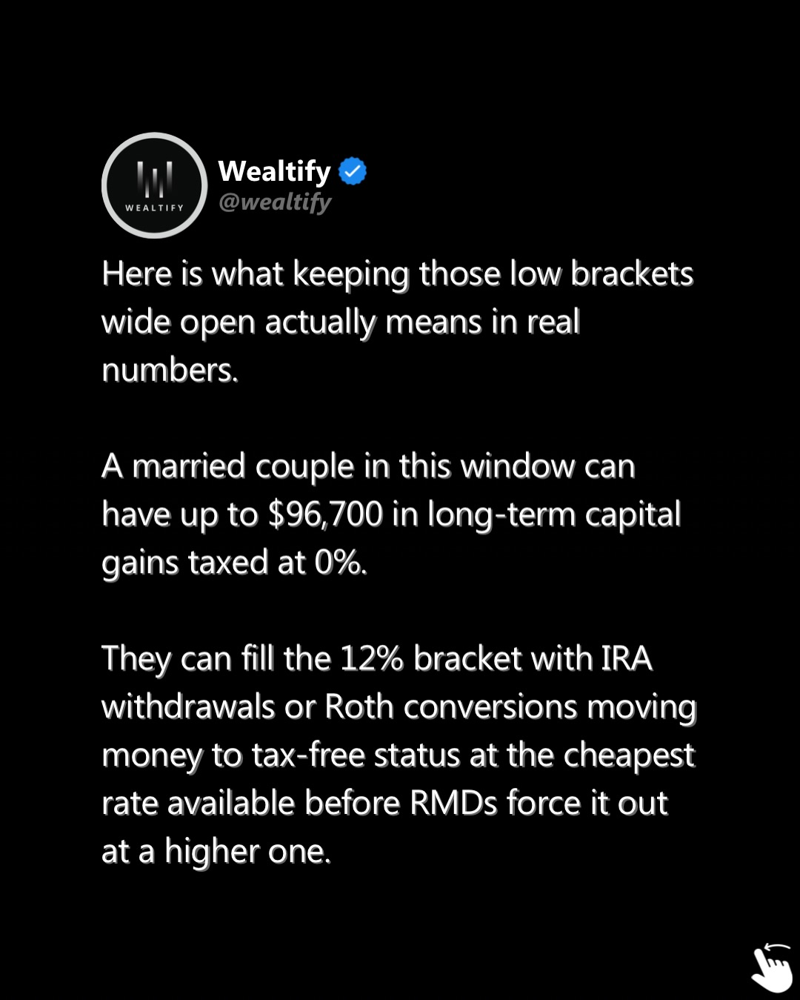

Instagram Post

Most people keep working past 59½ not because...
carousel (10 slides) (enriched by ClaudeClaw)
Summary
MOST PEOPLE PICK THEIR RETIREMENT DATE AROUND A BIRTHDAY ... | MOST PEOPLE PICK THEIR RETIREMENT DATE AROUND A BIRTHDAY ... | MOST PEOPLE PICK THEIR RETIREMENT DATE AROUND A BIRTHDAY ... | MOST PEOPLE PICK THEIR RETIREMENT DATE AROUND A BIRTHDAY ... | MOST PEOPLE PICK THEIR RETIREMENT DATE AROUND A BIRTHDAY ... | MOST PEOPLE PICK THEIR RETIREMENT DATE AROUND A BIRTHDAY ... | MOST PEOPLE PICK TH...
Caption
Most people keep working past 59½ not because they cannot afford to stop but because nobody ever explained what that age actually unlocks.
The 10% penalty disappears. No paycheck, no Social Security yet, no RMDs. Your taxable income is lower right now than it will ever be again in retirement.
Those are the years you could convert IRA money to Roth at the lowest rate you will ever pay. Every year you keep working full-time fills those brackets with salary and hands the IRS a window they will collect on for decades through larger RMDs, higher Social Security taxes, and Medicare surcharges that arrive all at once in your 70s.
The Unspoken Retirement Rules breaks down the 17 IRS-sourced strategies most salary earners discover too late including how to use the 59½ window before it closes permanently.
Comment RULES and we’ll send you the link.
1
MOST PEOPLE PICK THEIR RETIREMENT DATE AROUND A BIRTHDAY OR A HOLIDAY, AND THE IRS QUIETLY COLLECTS OVER $28,000 FROM THE ONES WHO CHOSE THE WRONG END OF THE CALENDAR WITHOUT EVER EXPLAINING THE DATE MATTERED. HERE'S THE MONTH THE IRS TREATS DIFFERENTLY. @wealtify
A man with a travel bag looks towards a sunset over mountains and a lake, while a large hand points to a winter month on a calendar that sits on a road breaking into a chasm where money falls and a distressed man sits, with the US Capitol building in the background.
2
MOST PEOPLE PICK THEIR RETIREMENT DATE AROUND A BIRTHDAY OR A HOLIDAY, AND THE IRS QUIETLY COLLECTS OVER $28,000 FROM THE ONES WHO CHOSE THE WRONG END OF THE CALENDAR WITHOUT EVER EXPLAINING THE DATE MATTERED. HERE'S THE MONTH THE IRS TREATS DIFFERENTLY. @wealtify
A man with a travel bag looks towards a sunset over mountains and a lake, while a large hand points to a winter month on a calendar that sits on a road breaking into a chasm where money falls and a distressed man sits, with the US Capitol building in the background.
3
MOST PEOPLE PICK THEIR RETIREMENT DATE AROUND A BIRTHDAY OR A HOLIDAY, AND THE IRS QUIETLY COLLECTS OVER $28,000 FROM THE ONES WHO CHOSE THE WRONG END OF THE CALENDAR WITHOUT EVER EXPLAINING THE DATE MATTERED. HERE'S THE MONTH THE IRS TREATS DIFFERENTLY. @wealtify
A man with a travel bag looks towards a sunset over mountains and a lake, while a large hand points to a winter scene on a calendar sitting on the edge of a chasm filled with falling money, next to a distressed man.
4
MOST PEOPLE PICK THEIR RETIREMENT DATE AROUND A BIRTHDAY OR A HOLIDAY, AND THE IRS QUIETLY COLLECTS OVER $28,000 FROM THE ONES WHO CHOSE THE WRONG END OF THE CALENDAR WITHOUT EVER EXPLAINING THE DATE MATTERED. HERE'S THE MONTH THE IRS TREATS DIFFERENTLY. @wealtify
A man with a travel bag looks towards a sunset over mountains and a lake, while a large hand points to a winter scene on a calendar sitting on the edge of a chasm filled with falling money, next to a distressed man.
5
MOST PEOPLE PICK THEIR RETIREMENT DATE AROUND A BIRTHDAY OR A HOLIDAY, AND THE IRS QUIETLY COLLECTS OVER $28,000 FROM THE ONES WHO CHOSE THE WRONG END OF THE CALENDAR WITHOUT EVER EXPLAINING THE DATE MATTERED. HERE'S THE MONTH THE IRS TREATS DIFFERENTLY. @wealtify
A man with a travel bag looks towards a sunset over mountains and a lake, while a large hand points to a winter scene on a calendar sitting on the edge of a chasm filled with falling money, next to a distressed man.
6
MOST PEOPLE PICK THEIR RETIREMENT DATE AROUND A BIRTHDAY OR A HOLIDAY, AND THE IRS QUIETLY COLLECTS OVER $28,000 FROM THE ONES WHO CHOSE THE WRONG END OF THE CALENDAR WITHOUT EVER EXPLAINING THE DATE MATTERED. HERE'S THE MONTH THE IRS TREATS DIFFERENTLY. @wealtify
A man with a travel bag looks towards a sunset over mountains and a lake, while a large hand points to a winter month on a calendar that sits on a road breaking into a chasm where money falls and a distressed man sits, with the US Capitol building in the background.
7
MOST PEOPLE PICK THEIR RETIREMENT DATE AROUND A BIRTHDAY OR A HOLIDAY, AND THE IRS QUIETLY COLLECTS OVER $28,000 FROM THE ONES WHO CHOSE THE WRONG END OF THE CALENDAR WITHOUT EVER EXPLAINING THE DATE MATTERED. HERE'S THE MONTH THE IRS TREATS DIFFERENTLY. @wealtify
A man with a travel bag looks towards a sunset over mountains and a lake, while a large hand points to a winter month on a calendar that sits on a road breaking into a chasm where money falls and a distressed man sits, with the US Capitol building in the background.
8
MOST PEOPLE PICK THEIR RETIREMENT DATE AROUND A BIRTHDAY OR A HOLIDAY, AND THE IRS QUIETLY COLLECTS OVER $28,000 FROM THE ONES WHO CHOSE THE WRONG END OF THE CALENDAR WITHOUT EVER EXPLAINING THE DATE MATTERED. HERE'S THE MONTH THE IRS TREATS DIFFERENTLY. @wealtify
A man with a travel bag looks towards a sunset over mountains and a lake, while a large hand points to a winter month on a calendar that sits on a road breaking into a chasm where money falls and a distressed man sits, with the US Capitol building in the background.
9
MOST PEOPLE PICK THEIR RETIREMENT DATE AROUND A BIRTHDAY OR A HOLIDAY, AND THE IRS QUIETLY COLLECTS OVER $28,000 FROM THE ONES WHO CHOSE THE WRONG END OF THE CALENDAR WITHOUT EVER EXPLAINING THE DATE MATTERED. HERE'S THE MONTH THE IRS TREATS DIFFERENTLY. @wealtify
A man with a travel bag looks towards a sunset over mountains and a lake, while a large hand points to a winter month on a calendar that sits on a road breaking into a chasm where money falls and a distressed man sits, with the US Capitol building in the background.
10
MOST PEOPLE PICK THEIR RETIREMENT DATE AROUND A BIRTHDAY OR A HOLIDAY, AND THE IRS QUIETLY COLLECTS OVER $28,000 FROM THE ONES WHO CHOSE THE WRONG END OF THE CALENDAR WITHOUT EVER EXPLAINING THE DATE MATTERED. HERE'S THE MONTH THE IRS TREATS DIFFERENTLY. @wealtify
A man with a travel bag looks towards a sunset over mountains and a lake, while a large hand points to a winter month on a calendar that sits on a road breaking into a chasm where money falls and a distressed man sits, with the US Capitol building in the background.
All slides


